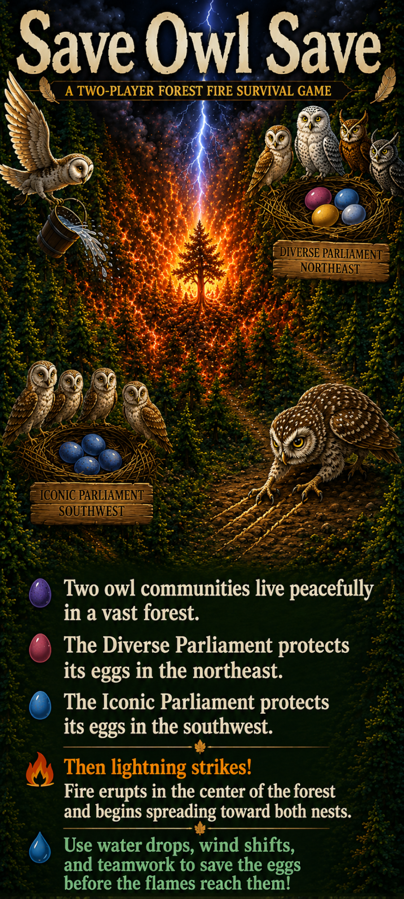

How to Play
Each player has five hidden action cards.
On your turn, privately view your cards. Choose one card to play, show it to the other player, then use the card.
Instead of playing a card, you may trade in cards for new ones. Trading ends your turn.
Pass the phone after each turn.